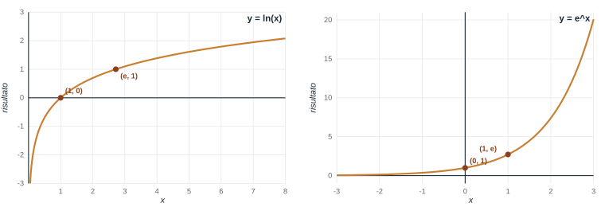

Fondamenti Teorici e Programmazione
Freccia destra o spazio per avanzare, freccia sinistra per tornare indietro — oppure i pulsanti "Indietro" e "Avanti" in fondo alla pagina.
Argomenti:
Math.log, Math.exp, Math.abs) e Number.isIntegerdo ... while (e differenza dal while): validare l'inputx++true / false): numeri primiswitch e operatore ternario ? :break e metodi iterativi| Esercizio | Argomento |
|---|---|
| Esercizio 1 | Operatore ++ |
| Esercizio 2 | Operatore ++ e ciclo while |
| Esercizio 3 | Ciclo while e do-while |
| Esercizio 4 | Funzioni matematiche |
| Esercizio 5 | Do-while e validazione dell'input |
| Esercizio 6 (★ 3.1) | Do-while e funzioni matematiche |
| Esercizio 7 (★ 3.2) | Variabili bandiera (numeri primi) |
| Esercizio 8 (★ 3.3) | Ciclo for |
| Esercizio 9 | Switch |
| Esercizio 10 (★ 3.4) | Switch |
| Esercizio 11 | Operatore ternario |
| Esercizio 12 | Cicli annidati |
| Esercizio 13 (★ 3.5) | Cicli annidati |
| Esercizio 14 | Break |
| Esercizio 15 | Metodi iterativi |
| Esercizio 16 (★ 3.6) | Metodi iterativi |
x++, while e do ... while, switch)Le regole sono le stesse delle volte scorse:
Gli esercizi con il simbolo ★ sono quelli del foglio di esercitazione; gli altri servono per arrivarci un passo alla volta.
x++)x++ aumenta x di 1, come x = x + 1. Come espressione, x++ vale il valore di prima dell'aumento.
A. Senza eseguirlo, cosa stampa?
let x = 5;
x++;
x++;
console.log(x);B. Cosa stampano x e somma? Attenzione a dove compare x++.
let x = 1;
let somma = 0;
while (x <= 4) {
somma = somma + x++;
}
console.log(x, somma);C. Cosa stampa? Quante volte gira il ciclo?
let i = 0;
while (i < 3) {
console.log(i);
i++;
}
console.log("fine", i);x++Il programma legge numeri finché l'utente non inserisce 0, e alla fine stampa quanti numeri sono stati inseriti (lo 0 escluso) e quanti di essi erano positivi. Completate (al posto di ______) la condizione del ciclo, le due istruzioni con ++ e la condizione dell'if:
let totale = 0;
let positivi = 0;
let x_input = prompt("Numero (0 per terminare):");
let x = Number(x_input);
while (______) {
______; // un numero in più
if (______) {
______; // un positivo in più
}
x_input = prompt("Numero (0 per terminare):");
x = Number(x_input);
}
console.log("Inseriti:", totale, "positivi:", positivi);do ... whileNel while la condizione viene controllata prima di eseguire il corpo. Nel do ... while il corpo viene eseguito almeno una volta, e la condizione si controlla dopo:
let x;
do {
let x_input = prompt("Inserisci un numero positivo:");
x = Number(x_input);
} while (x <= 0); // si ripete finché il valore NON è valido
console.log("Hai inserito:", x);while non esegue mai il corpo, do ... while lo esegue una volta;x) va dichiarata prima del do: se la dichiarate dentro le graffe, la condizione del while non la vede;while;; dopo la parentesi del while.while e do ... while)Per ogni programma, dite cosa stampa senza eseguirlo.
A. La condizione è vera all'inizio:
let n = 1;
while (n <= 3) {
console.log("giro", n);
n++;
}B. La condizione è falsa fin dall'inizio: cambia qualcosa tra i due cicli?
let n = 10;
while (n < 5) {
console.log("while");
n++;
}
do {
console.log("do-while");
n++;
} while (n < 5);
console.log(n);C. Completate (al posto di ______) la parola chiave e la condizione, in modo che il programma chieda un numero e lo richieda finché non è positivo:
let x;
______ {
let x_input = prompt("Numero positivo:");
x = Number(x_input);
} ______ (______);| Strumento | Cosa fa | Esempio |
|---|---|---|
Math.log(x) | logaritmo naturale (in base e), x > 0 | Math.log(1) → 0 |
Math.exp(x) | e elevato a x | Math.exp(0) → 1 |
Math.abs(x) | valore assoluto | Math.abs(-3) → 3 |
Math.sqrt(x) | radice quadrata | Math.sqrt(9) → 3 |
Math.sin(x) | seno (x in radianti) | Math.sin(0) → 0 |
x ** y | x elevato a y | 2 ** 3 → 8 |
Number.isInteger(x) | true se x è un numero intero | Number.isInteger(2.5) → false |
Una funzione si usa scrivendo il suo nome e, tra parentesi, il valore su cui lavora. Il risultato si può salvare in una variabile oppure stampare direttamente.
Leggere un numero x e stampare, su due righe, il suo logaritmo naturale e e elevato a x. Con x = 1:
ln(x): 0
exp(x): 2.718281828459045I due grafici mostrano come si comportano le funzioni:

ln(x) esiste solo per x > 0; vale 0 in x = 1, è negativa tra 0 e 1 e cresce lentamente; avvicinandosi a 0 scende verso -Infinity;e^x è sempre positiva; vale 1 in x = 0 ed è e ≈ 2.718 in x = 1; cresce sempre più in fretta;Math.log(Math.exp(x)) torna x.Con un do ... while, chiedere all'utente un numero intero compreso tra 1 e 100 (estremi inclusi) e ripetere la domanda finché non è valido. Alla fine stampare il numero.
Suggerimento: Number.isInteger(x) è true se x è intero; per il caso sbagliato usate ! e ||.
Sapendo che log_a(b) = ln(b) / ln(a), scrivere un programma che legga due numeri a e b e stampi il valore di log_a(b). Una volta inseriti a e b, verificare che a sia un intero maggiore di 1 e b sia un reale positivo. Se così non fosse, far ripetere l'inserimento di entrambi i valori all'utente. Alla fine stampare il risultato. Con a = 2 e b = 8 il risultato è 3.
Suggerimento: usate Math.log (esercizio 4) per il logaritmo e il do ... while dell'esercizio 5 per ripetere l'input.
Una variabile booleana può "ricordare" se, durante un ciclo, è successo qualcosa:
Esempio: l'utente inserisce 5 numeri; vogliamo sapere se tra questi c'è uno zero.
let zero_presente = false; // ipotesi iniziale: non c'è nessuno zero
for (let i = 1; i <= 5; i++) {
let x_input = prompt("Numero " + i + ":");
let x = Number(x_input);
if (x == 0) {
zero_presente = true; // trovato uno zero: alzo la bandiera
}
}
console.log("C'è almeno uno zero:", zero_presente);Con 3, 7, 0, 4, 9 stampa true; con 3, 7, 2, 4, 9 stampa false. Con 0, 5, 0, 1, 0 stampa ancora true (una volta sola): la bandiera dice se è successo, non quante volte.
false, oppure true);Un numero intero N > 1 è primo se è divisibile solo per 1 e per se stesso. Scrivere un programma che legga N e stampi se è primo oppure no.
Una volta letto N, verificare che sia un intero maggiore di 1. Se così non fosse, far ripetere l'inserimento.
Suggerimento: ipotizzate che N sia primo (true) e provate tutti i numeri da 2 a N - 1: se ne trovate uno che divide N, l'ipotesi è smentita. Riusate il do ... while dell'esercizio 5 per l'input.
La formula per convertire gradi Celsius C in gradi Fahrenheit F è F = 32 + (9/5) · C. Visualizzare la tabella di conversione da Celsius a Fahrenheit per l'intervallo 50 – 60 °C con passi di un grado, nel formato:
50°C = 122°F
51°C = 123.8°F
...switchQuando una variabile può avere tanti valori fissi e per ognuno si fa una cosa diversa, switch è più leggibile di una lunga catena di if / else if:
let giorno = 3;
let nome;
switch (giorno) {
case 1:
nome = "lunedì";
break;
case 2:
nome = "martedì";
break;
default:
nome = "altro giorno";
}
console.log(nome);case (confronto di uguaglianza);break termina lo switch: senza break, l'esecuzione "cade" nel case successivo;default è facoltativo e si esegue se nessun case corrisponde.Equivale a:
if (giorno == 1) {
nome = "lunedì";
} else if (giorno == 2) {
nome = "martedì";
} else {
nome = "altro giorno";
}switch: cosa stampa e completaA. Senza eseguirlo, cosa stampa questo programma?
let v = 2;
switch (v) {
case 1:
console.log("uno");
case 2:
console.log("due");
case 3:
console.log("tre");
break;
default:
console.log("altro");
}B. Il programma legge un numero da 1 a 3 e stampa il nome del semaforo corrispondente: 1 → rosso, 2 → giallo, 3 → verde, qualsiasi altro valore → spento. Completate (al posto di ______).
let n_input = prompt("Numero da 1 a 3:");
let n = Number(n_input);
let colore;
switch (______) {
case 1:
colore = "rosso";
______;
case 2:
colore = "giallo";
break;
case 3:
colore = "verde";
break;
______:
colore = "spento";
}
console.log(colore);Realizzare un programma che, ricevuto in input un numero N compreso tra 1 e 12 (estremi inclusi), stampi il corrispondente mese dell'anno: con 1 stampi gennaio, con 2 febbraio, e così via.
Prima di tutto verificare che N sia un numero intero compreso tra 1 e 12; se così non fosse, far ripetere l'inserimento.
Usare l'istruzione switch; poi riscrivere il programma con if / else if / else.
Quando un if serve solo a scegliere un valore tra due, si può scrivere in modo compatto:
let messaggio = (eta >= 18) ? "maggiorenne" : "minorenne";condizione ? valore_se_vera : valore_se_falsaÈ equivalente a:
let messaggio;
if (eta >= 18) {
messaggio = "maggiorenne";
} else {
messaggio = "minorenne";
}if / else if o switch.Il programma legge un numero e stampa pari oppure dispari. Completate (al posto di ______) la condizione e i due valori.
let n_input = prompt("n:");
let n = Number(n_input);
let tipo = (______) ? ______ : ______;
console.log(n + " è " + tipo);Un ciclo può contenere un altro ciclo. Il ciclo interno viene eseguito per intero a ogni giro del ciclo esterno:
for (let i = 1; i <= 3; i++) { // esterno: 3 giri
let riga = "";
for (let j = 1; j <= i; j++) { // interno: i giri, ricomincia ogni volta
riga = riga + "*";
}
console.log(riga);
}*
**
***j) e quelle del ciclo esterno (i) devono avere nomi diversi;riga) vanno inizializzate dentro il ciclo esterno, prima del ciclo interno;Il fattoriale di un numero naturale n è il prodotto di tutti gli interi da 1 a n: 0! = 1, 1! = 1, 2! = 2 · 1, 3! = 3 · 2 · 1, ... Stampare i fattoriali di tutti i numeri da 0 a 6, una riga per numero:
0! = 1
1! = 1
2! = 2
...
6! = 720Suggerimento: servono due cicli, uno dentro l'altro (Recap 6). Il ciclo esterno scorre i numeri da 0 a 6; per ciascuno, il ciclo interno calcola il fattoriale con un prodotto accumulato (come nell'esercitazione 2). Prima di scrivere il programma intero, provate a calcolare un solo fattoriale, ad esempio quello di 5.
Mediante la serie di Taylor si può approssimare la funzione seno sommando tanti termini, uno per ogni valore di n = 0, 1, 2, ..., N:
sen(x) ≈ x - x³/3! + x⁵/5! - x⁷/7! + ...Ogni termine ha questa forma:
(-1)ⁿ · x^(2n+1)
termine = ------------------
(2n + 1)!Per esempio:
| n | termine |
|---|---|
| 0 | + x¹ / 1! |
| 1 | - x³ / 3! |
| 2 | + x⁵ / 5! |
| 3 | - x⁷ / 7! |
Il numeratore è x elevato a 2n+1, con il segno che alterna (+, -, +, ...); il denominatore è il fattoriale di 2n+1.
Con N = 10, calcolare il valore approssimato di sen(x) per x = 0.5 e determinare l'errore commesso rispetto a Math.sin(x).
N.B.: per ogni valore di n bisogna calcolare (2n+1)! prima di usarlo nella sommatoria.
Suggerimento: usate un ciclo esterno per n e, dentro, un ciclo interno per il fattoriale (come nell'esercizio 12). Il segno alternato si ottiene con (-1) ** n: vale 1 se n è pari e -1 se è dispari.
break e i metodi iterativibreak interrompe subito il ciclo in cui si trova (come nello switch), e l'esecuzione prosegue dalla riga dopo la }:
for (let i = 1; i <= 100; i++) {
console.log(i);
if (i * i > 50) {
break; // i = 8: 64 > 50, esco dal ciclo
}
}Un metodo iterativo ripete lo stesso calcolo partendo dal risultato precedente, fino a quando il risultato smette di cambiare in modo apprezzabile:
let x_vecchio = 1; // valore di partenza
for (let i = 1; i <= 1000; i++) { // limite di sicurezza
let x_nuovo = Math.cos(x_vecchio); // nuovo valore, calcolato dal precedente
if (Math.abs(x_nuovo - x_vecchio) < 0.000001) {
break; // differenza piccola: mi fermo
}
x_vecchio = x_nuovo; // il nuovo diventa il vecchio
}Math.abs serve perché la differenza può essere negativa e ci interessa solo la sua distanza;for protegge da un metodo che non converge mai;0.000001, oppure 10 ** (-6), oppure 1e-6.Un rettangolo ha altezza 3 e una base che parte da 1. Aumentare la base di 1 alla volta; a ogni passo calcolare l'area e stamparla, nel formato
base 1: area 3
base 2: area 6
...Il ciclo deve fermarsi non appena l'area supera 50. Alla fine stampare la base e l'area raggiunte.
Suggerimento: usate un for per la base, con un limite di sicurezza (ad esempio 1000), e un if con break che controlla l'area.
Un metodo iterativo parte da un valore iniziale e ripete lo stesso calcolo, usando ogni volta il risultato precedente. Partire da x = 1 e ripetere x = Math.cos(x). Il ciclo deve fermarsi quando la differenza (in valore assoluto) tra il nuovo valore e il precedente è minore di 10 ** (-6). Mettere un limite di sicurezza di 1000 passi. Alla fine stampare il valore trovato e il numero di passi necessari.
(Risposta attesa: valore circa 0.7390855, in 34 passi.)
L'equazione
e^(-x) - x = 0non si può risolvere con i metodi che conosciamo (è non lineare): si cerca una soluzione approssimata con un metodo iterativo. Si parte da un valore x₀ e si calcola ogni nuovo valore da quello precedente:
x₁ = e^(-x₀)
x₂ = e^(-x₁)
x₃ = e^(-x₂)
...
xₙ = e^(-xₙ₋₁) con n = 1, 2, 3, ...In JavaScript, chiamando x_vecchio il valore xₙ₋₁ e x_nuovo il valore xₙ:
x_nuovo = Math.exp(-x_vecchio);La successione converge alla soluzione. Come criterio di arresto si ripete finché non vale la condizione
|xₙ - xₙ₋₁|
----------- < 10⁻⁶ cioè |xₙ - xₙ₋₁| / |xₙ| < 0.000001
|xₙ|che in JavaScript si scrive:
Math.abs(x_nuovo - x_vecchio) / Math.abs(x_nuovo) < 10 ** (-6)Primi passi, partendo da x₀ = 1: x₁ = 0.3679, x₂ = 0.6922, x₃ = 0.5005, x₄ = 0.6062, ...
Scrivere un programma che, partendo dalla soluzione di primo tentativo x₀ = 1.0, determini la soluzione approssimata e stampi sia il valore trovato sia il numero di iterazioni necessarie.
(Risposta attesa: soluzione = 0.56714..., iterazioni = 26.)
Suggerimento: è l'esercizio 15, con due cambiamenti: la formula del nuovo valore (Math.exp) e il criterio di arresto (errore relativo: la differenza divisa per |x_nuovo|).